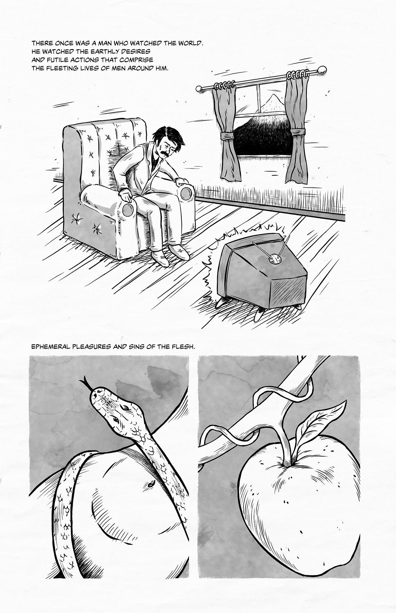
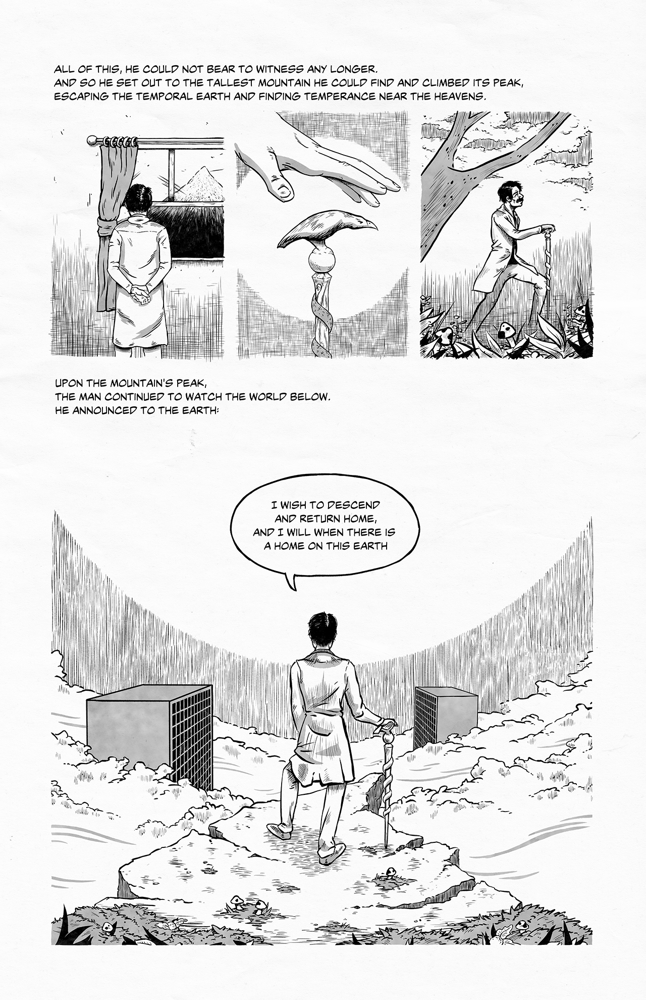

A Man Who Watched The World
A Man Who Watched the World is a six‑page philosophical parable about a man who retreats to a mountain to escape the restless desires of humanity. From his distant vantage, he observes the world with pity, questions the purpose of passion and suffering, and confronts the quiet indifference of time, nature, and God. As the mountain erodes beneath him, his vigil becomes a meditation on watching, weariness, and the slow dissolution of all things.

